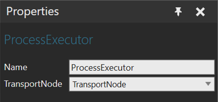

Process Executor contains one or more process routines, which it can execute. The process execution starts automatically when simulation starts and it continues to run during a simulation if it is not stopped on purpose.

| Name | Description |
| Name | Name of the process executor behavior |
| TransportNode | Defines the component’s Transport Node behavior.
Note: The transport node is required for statements that transport products in or out. |